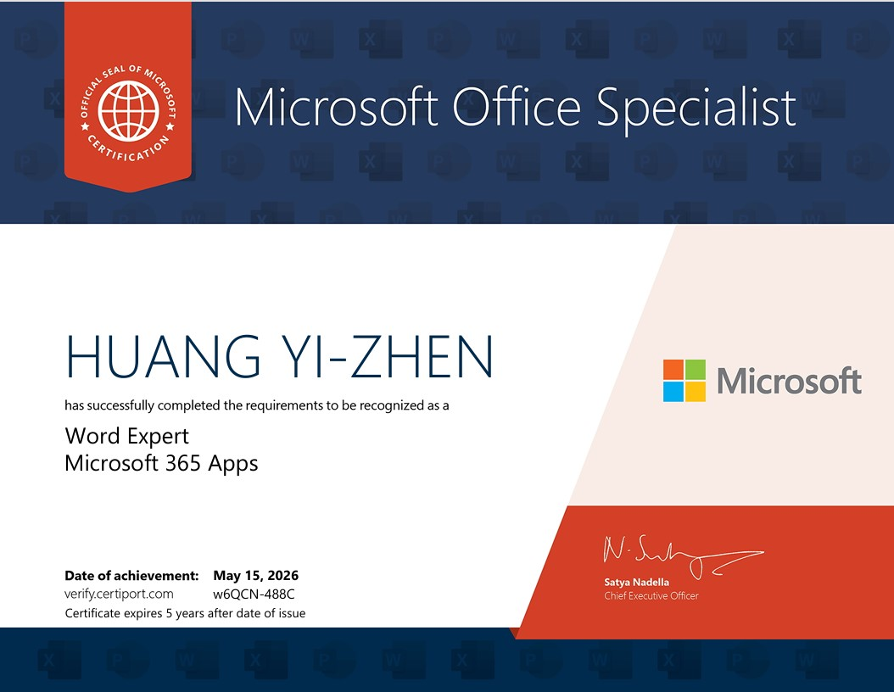
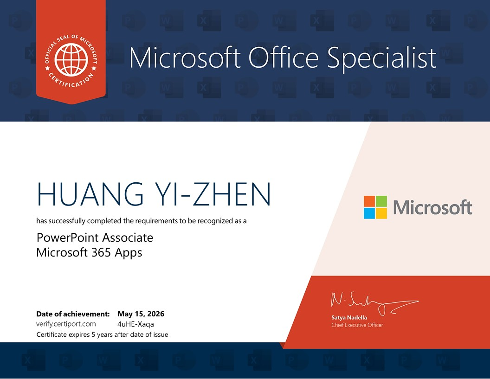
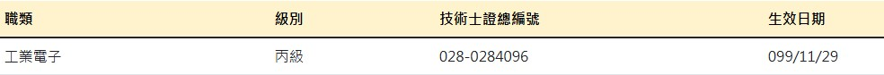

電腦技能
- 辦公軟體應用：熟悉 Microsoft Word、Excel、PowerPoint，具備文件製作、報表整理、資料分析及簡報設計能力。
- Excel 資料分析：熟悉函數運用、資料排序、篩選、樞紐分析及資料整理，可協助行政報表與數據管理作業。
- 數據視覺化：具備 Power BI 基礎應用能力，可建立資料分析儀表板與視覺化圖表。
- AI 工具應用：熟悉 Gemini、Google AI Studio、ChatGPT 等生成式 AI 工具，可運用於日常文書處理以提升工作效率。
學歷與工作經歷
- 因家庭照護需求選擇彈性工作，期間自行安排工作時程、規劃路線並處理突發狀況，培養出良好的自我管理與時間管理能力。
- 參與產品組裝、品質檢驗及產線相關作業，快速適應不同工作環境並配合產線需求。
- 累積逾四年科技廠製造業實務經驗，熟悉並落實標準作業程序（SOP）、品質管理。
- 建立嚴格遵守廠區工安規範與穩定完成工作的習慣。
個人自傳
我的人生歷程並非一路按照原定規劃前進。2015年底因家庭因素離開宏達國際電子，調整原有的學業與職涯規劃，將重心放在家庭照護與工作之間的平衡。這段經歷雖然讓我的發展方向與一般人有所不同，但也讓我更早體會責任的重要性，並學習在不同環境中持續尋找未來的方向。
我在學生時期透過產學合作進入宏達國際電子（HTC）擔任作業員，自 2011 年 8 月至 2015 年 12 月累積超過四年的製造業工作經驗。在工作中學習標準作業程序（SOP）、品質管理及團隊合作的重要性，也建立遵守規範與穩定完成工作的習慣。
後續因家庭照護需求，在兼顧家庭責任期間曾透過人力派遣公司進入電子產業工作，參與產品組裝、品質檢驗及產線相關作業，持續累積製造業現場實務經驗。雖然工作型態以派遣為主，但也讓我學習配合產線需求及快速適應不同工作環境。為兼顧家庭照護需求與工作彈性，後續先從事個體配送工作，之後投入外送平台服務作為主要收入來源。長期自主工作的過程中，培養出時間管理、自我管理及問題處理能力。
在家庭照護期間，我始終沒有放棄進修與學習。為提升未來職涯發展機會，我重返校園取得龍華科技大學電子工程學士學位，並參加數位辦公與 AI 應用培訓班，精進各項文書軟體與數位工具應用。期望能將過去累積的實務經驗與責任心，投入工程行政與助理相關職務，為團隊帶來穩定的支援與貢獻。
專業證照展示




業務主管安衛管理與合規能力

數位專案與實作
- 專案目標：突破傳統紙本題庫限制，自主開發實境模擬系統以高效準備 MOS 專家級認證。
- 解決方案：運用 AI 輔助開發，僅花費 5 天即完成跨平台 (Web/Electron) 環境偵測與自動化佈署 MVP，成功繞過瀏覽器沙盒限制。
- 產出成果：成功應用此工具輔助自身高分獲證，體現「定義問題、尋求技術資源、快速落地」的問題解決能力。
- 專案內容：於數位辦公培訓期間，參與規劃並實作「健康資訊導覽平台」與「防災生活與居家準備資訊平台」。
- 執行細節：運用生成式 AI 進行資料蒐集、內容重構與提示詞 (Prompt) 設計，將龐雜的公共資訊轉化為易讀的視覺化介面。
- 核心貢獻：負責從需求規劃、內容整理、功能測試到成果展示的流程，展現數位專案管理與資訊處理的綜合能力。